Helping Teachers Teach Mathematics Conference -HTTMC
One major objective of AIMS Ghana as a UNESCO Category II Centre of Excellence is to provide training and professional development in the Mathematical Sciences for high school teachers across Africa. In line with this, AIMS Ghana in collaboration with the Centre for Education in Mathematics and Computing (CEMC) at the University of Waterloo, Canada is organizing a conference on helping teachers to teach Mathematics and Computing.
The goal of the conference is to provide current teachers in Africa with the opportunity to expand their knowledge on how to teach mathematics foundations of the core high school curricula. It is also aimed to expose them to new ways of teaching and applying modern mathematics. Most talks in the conference include tasks that will be directly applicable to daily classroom teaching. The conference will also challenge the teachers to brainstorm creative and dynamic ways of transmitting their knowledge to students.
The AIMS Ghana – CEMC Helping Teachers Teach Mathematics Conference (HTTMC) will be held at the University of Ghana from 24th – 26th of April 2024. This blended (online/in-person) conference for Mathematics teachers is an opportunity to connect and share ideas. The Helping Teachers Teach Mathematics Conference (HTTMC) is to help bring educators together to share their knowledge and expertise, help build new connections and tap into a renewed enthusiasm for mathematics and computing.
Helping Teachers Teach Mathematics Conference -HTTMC
- Comfort Mintah, University of Waterloo, CEMC
- Angela Tabiri, AIMS Ghana
- Rob Gleeson University of Waterloo, CEMC
- Charlene Asiedu, AIMS Ghana
Helping Teachers Teach Mathematics Conference -HTTMC
Speaker: Ian VanderBurgh
Bio: Ian VanderBurgh has been the Director of the Centre for Education in Mathematics and Computing (CEMC) at the University of Waterloo since 2005 and a Lecturer in the Faculty of Mathematics at Waterloo since 2000, teaching mainly first- and second-year calculus and algebra courses and online courses in the CEMC’s Master of Mathematics for Teachers (MMT) program, of which he is also Director. In 2008, Ian received a Distinguished Teaching Award from the University, and in 2016, Ian won the Canadian Mathematical Society’s Excellence in Teaching Award. He enjoys sharing his love of math with students and teachers and has led workshops throughout Canada, as well as in India, England, Luxembourg, Ghana, and Kenya.
Title: Problem Solving is the Future
Abstract: Our world needs problem solvers. In mathematics education, we have a unique opportunity to help train our students for this pressing need. We will do some problem solving and talk about how this can be incorporated in our teaching practice.
Speaker: Marcel te Bokkel
Bio: Marcel te Bokkel is a graduate from the Mathematics Teaching Option and the Master’s of Mathematics for Teachers programs from the University of Waterloo. He has been involved in secondary mathematics education since 1992, in various roles from classroom teacher, department head, and most recently as YRDSB Secondary Mathematics consultant. Presently, he is Vice Principal at Innova Academy in Newmarket, Ontario.
Title: Area Models Presentation
Abstract: The regular use of visual representations play a critical role in opening access to understanding for all students. When students are asked to visualize a problem and draw ideas that they might have, students exhibit higher levels of engagement. In classrooms where visuals play a greater role, more opportunities are available for students to develop an understanding of the mathematical ideas that are not present without the visuals. We will explore together how some games, models and tools can support the development of mathematics understanding in students. We will consider the area model as it builds understanding throughout the grades. Some resources will be links as well.
Speaker: Jason Van Rooyen
Bio: Jason Van Rooyen has been teaching for 30 years in Ontario, Canada high schools and lives near Toronto. He teaches both mathematics and computer science including teaching the International Baccalaureate High Level Mathematics for approximately 15 of those years. He has been the Mathematics Department Head at White Oaks Secondary School in Oakville for twenty years. He loves exploring good problems.
Title: Rich Tasks for Your Classroom
Abstract: This talk will explore different mathematical tasks that can be used in a math classroom. Each of the tasks will have common entry points for all students but students of varying abilities will be able to reach different end points. Both Core and Elective-appropriate questions will be explored and often combined.
Speaker: Chisara P. Ogbogbo
Bio: Chisara P Ogbogbo holds a PhD in Mathematics from the University of Ibadan. Nigeria. (With specialization in Financial Mathematics). She is currently the Head of the Department of Mathematics, University of Ghana, Legon. Her research interests are Financial Mathematics, computational Finance, Mathematical modeling, especially stochastic modeling involving the financial market. Chisara has written a number of research papers published in competitive peer reviewed, international journals of Mathematics and Science. She has a significant number of collaborations globally. She has supervised many students. She is also involved in programs for Training Teachers for effective teaching of Mathematics. She is a recipient of a number of grants and academic fellowships, and also a mentor and advocate for Girls in STEM.
Title: Destroying the Phobia for Mathematics, through Innovative Communication of the Subject.
Abstract: The ability of teachers to communicate Mathematics effectively will make a great difference in the learning process. To take our place in STEM education, Mathematics teachers need to be grounded, innovative, and dynamic with the teaching methods. Students would respond positively to Mathematics, if it is made interesting to the students. Even in the absence of modern technology in most African classrooms, something can still be done, to drive the necessary change, and inject enthusiasm. In my talk, I will present series of illustrations (using basic algebra, calculus, financial Mathematics) to sensitize the teachers and demonstrate that the teaching of Mathematics can be tailored, to suit even the students who have a phobia for Mathematics.
Speaker: Rich Dlin
Bio: Rich believes that guiding young people along their path is one of the highest honours and greatest responsibilities, which is why he is drawn to education and why he has been so focused on improving the student experience. Rich’s journey as an educator includes university lecturer, international lecturer, public speaker, high school teacher and math department head. He has undergraduate and graduate degrees in mathematics from the University of Waterloo and a degree in education from the University of Western Ontario. Rich has worked with thousands of students both in class and one-on-one, helping them to realize their full potential in mathematics success – a potential often far exceeding the students’ own expectations. He is passionate about the joy of learning and has found that the study of mathematics is a perfect path to discovering that joy. Rich believes that the threefold essence of a strong teacher is passion for learning, for students, and for the subject matter. He therefore works to teach and model all three of these, along with a good dose of humour to establish humanity. The depth of experience and introspection available through the study of mathematics is profound, and this, coupled with constant scrutiny of his ability to communicate it to a range of personalities, learning styles, and innate interest and ability levels, informs his approach as an educator.
Colloquium: Using Paradox to Motivate Thought and Learning: The Mysteries of Infinity
Abstract 1
In modern non-mathematical discourse, the word infinity is used often, and without a true notion of its mathematical implications. In mathematics, the contemplation of infinity as a concept is as old as time (and how old is that?). Infinity can transcend the math classroom and take us into the realms of philosophy and even religion. And while we may not truly understand infinity, we have done a lot of work to harness it! In this talk, Rich will discuss some implications of infinity through a mathematical lens. He will highlight some paradoxes that arise in even the most basic mathematics, and how we resolve them (or at least, quantify them) in mathematics.
Title: Understanding Mathematics: Returning to The Why
Abstract 2
Very often our approach to teaching mathematics leads students to believe that math is about “getting the right answer”. This methodology focuses on algorithmic approaches to answering questions, which is to say, it teaches students “how” to do mathematics. In this session we will cover the motivation for and methods to facilitate a purer approach to high school mathematics. We will investigate ways to help students see the “why” of the mathematics we teach, as opposed to the “how”. Topics will range from ‘simple’ things like exponent rules and solving equations, to more sophisticated concepts like teaching students to think deeply about zero and infinity, and why limits really are a big deal. This type of approach makes math enjoyable, easier to understand, and pays huge dividends as our students progress through to higher levels of mathematics study.
Speaker: Carly Ziniuk
Bio: A 2016 Descartes Medalist, Carly Ziniuk is a teacher of Mathematics and Statistics in Toronto, Canada. The “In the Middle” columnist for the OAME Gazette, she has extensive international writing and speaking expertise in middle and secondary school mathematics, showing how to apply real-life data to engage students in solving problems. Highlighted work at the National Gallery of Canada, NCTM, TVOntario/ILC. This year she has presented widely on the historical connections to curve stitching, linking modern Bezier curves with coronal loops. Carly is demonstrating widely how to use NASA resources in Math classrooms as part of the 2023-4 NASA Space Apps Collective: Building an Inclusive Global Space Community. She has shown teachers the mathematical underpinnings of astronomical occurrences like Leap Days and the upcoming total solar eclipse.
Title: Out of this World: NASA/CSA Resources for Math Educators
Abstract: With our theme “Building an Inclusive Global Space Community,” the NASA Space Apps Collective is using open data to spark innovations. As a Collective member and teacher, I will share free, easily-accessible astronomy, space, and climate resources. Learn how to apply open datasets, use beautiful satellite images, stream video content, incorporate local “Astroindigenous” knowledge, download posters, find ready-to-use lesson plans with solutions, and illustrate math concepts with astronomy facts.
Speaker: Mike Jacobs
Bio: Mike Jacobs is a Mathematics Consultant K to 12 for Durham Catholic District School Board in Ontario, Canada. Originally from Yorkshire in the U.K., he has been teaching for 34 years. He is passionate about finding effective ways to learn and enjoy mathematics. He has created number sense puzzles called yohaku puzzles and his favourite prime number is 23. When he is not working, he enjoys running and climbing mountains.
Title: Shaping Up Using the Concrete-Diagrammatic-Symbolic continuum in Geometry
Abstract: In this session we will look at how we can help our students develop a deeper understanding of many high school geometry concepts by using the concrete-diagrammatic-symbolic continuum. In particular, we will look hands-on activities to learn about circle properties, triangle properties and the Pythagorean Rule.
Speakers: Amanda Zammit and Sheri Hill
Bio 1: Amanda Zammit has been a teacher for 10 years and specializes in biology and mathematics. As an educator, Amanda is dedicated to understanding her students, breaking down math barriers, and instilling confidence by making the subject personally meaningful. Beyond the classroom, she enjoys expressing her creativity through knitting and crochet, and has a passion for travelling, exploring the cuisines and cultures of new places.
Bio 2: Sheri Hill brings over 20 years of teaching experience, specializing in mathematics and computer science. Passionate about the subject, she enjoys exploring the intricacies of mathematics and fostering students’ enjoyment of the learning journey. With a keen eye for mathematical applications in everyday life, Sheri endeavors to integrate math into her courses in a purposeful manner. Beyond the classroom, she finds joy in raising her two daughters, organizing STEM camps, and participating in cottage life.
Title: Exploring the Intersection of Mathematics, Art, and Nature
Abstract: In our educational journey, we’ve embraced an innovative teaching method that blends symmetric art from diverse cultures with observations from the natural world. Our aim is to look into applying mathematical principles to tangible elements encountered in our environment. Through a hands-on approach, we examine the process of drawing, designing, and calculating using both traditional techniques and computer-based tools. We invite you to join us in discovering how this approach enriches mathematical comprehension and nurtures creative problem-solving abilities.
Speaker: David Petro
Bio: David Petro is the former Math, Science and IT consultant at the Windsor Essex Catholic DSB. Currently, he is the vice principal at St.Thomas of Villanova High School. He has also been known to work on curriculum and textbook writing from time to time (most recently, on the latest Data Management textbook from the former McGraw Hill). He is also a Desmos Fellow. In his spare time he helped to raise a small herd of 3 humans (who have grown up to be adults) and compete in Ironman triathlons. Find him on Twitter @davidpetro314.
Title: Exploring ideas to help students talk about Math in class
Abstract: If your students are doing the talking about math then they are doing the thinking. In this session we will explore ideas and techniques to get students to talk to each other and you about the math you are doing in class. When students are active members of your class, there is a greater chance they will do better when they start to work independently. Come to this session ready to talk.
Speaker: Kenneth Dadedzi
Bio: Kenneth Dadedzi is currently a lecturer at the Department of Mathematics, University of Ghana. Previously he served as a Head Tutor at AIMS Ghana and AIMS South Africa, as well as a teaching assistant at the University of Cape Coast. He specializes in Spectral Graph Theory and its practical implementations, holding both master’s and doctorate degrees from Stellenbosch University, South Africa. He is also an AIMS – South Africa Alumni, having graduated in 2014.
Title: Utilizing Technology for Mathematics Instruction and Evaluation.
Abstract: In today’s educational landscape, the integration of technology has become increasingly vital for effective teaching and assessment in mathematics. This talk will explore the various ways in which technology can be harnessed to enhance both the instruction and evaluation processes in mathematics education. We will consider interactive learning platforms to digital assessment tools.
Speaker: Angela Tabiri
Bio: After graduating from the African Institute for Mathematical Sciences (AIMS) Ghana in 2014, Angela enrolled in the International Centre for Theoretical Physics (ICTP) postgraduate diploma in mathematics. While at ICTP Angela applied for and was awarded the Schlumberger Foundation Faculty for the Future Fellowship in 2015 to fund her PhD in mathematics studies at the University of Glasgow, UK. In June 2019, she graduated from the University of Glasgow with a PhD in Mathematics. Angela is currently a Research Associate with interest in Quantum Algebra and the Academic Manager for the Girls in Mathematical Sciences Program (GMSP) at AIMS-Ghana. The GMSP nurtures the talents of secondary school girls from Ghana to unlock their potential in the mathematical sciences. She organizes Science Slam Ghana, a science communication event where researchers present their research to a lay audience in fun and engaging ways. Angela is the founder of Femafricmaths, a non-governmental organization that promotes female African mathematicians. She interviews mathsqueens on the Femafricmaths YouTube channel to inspire young people about the different career options available when they study mathematics.
Title: The Centrality of Mathematics in Diverse Careers: A Case Study of Examination Questions
Abstract: In a class, students have interests in different mathematical concepts usually based on their career choices. Though students grow up to pursue diverse professions, their backgrounds in mathematics need to be good. How should teachers motivate mathematics topics to make it relevant to the diverse careers students are interested in? This talk will explore how examination questions reflect the usefulness of mathematics in diverse careers
Speaker: Rhoda J Hawkins
Bio: Dr. Rhoda Joy Hawkins is the Academic Director of AIMS Ghana and a senior lecturer in the Department of Physics and Astronomy at the University of Sheffield.
Rhoda did her Undergraduate and Masters in physics at the University of Oxford and completed her PhD in 2005 at the University of Leeds under the supervision of Tom McLeish. She then did postdoctoral research in theoretical biological physics at AMOLF in Amsterdam, the Sorbonne Université and Institut Curie in Paris and in the department of mathematics at the University of Bristol. In 2011 she became a lecturer at the University of Sheffield. Her involvement with AIMS started in 2010 and since then she has been a visiting lecturer at the South Africa, Senegal and Ghana centres.
Her primary research interests are in modelling the mechanics and movement of biological cells with applications to disease.
Title: Increasing learner confidence through individual support and real life applications.
Abstract: Many people are limited in their performance in mathematics by a lack of confidence. Mathematics is viewed as abstract and difficult. Under-confident learners may disengage because they think it is too hard for them. This situation can be turned around by an increase in self-confidence. This can be achieved when a learner realizes that they can do a mathematical calculation that they thought they could not. Their confidence grows as they experience the joy of solving a problem they thought was too hard. How can educators increase learner confidence? Self-motivation can be increased by relating abstract mathematics to real-life applications that are relevant and of interest to the learner. Showing how mathematics is used in various applications can encourage learners to persevere in mathematics as a powerful problem-solving tool. In my talk, I will show some examples from my own research in mathematical biophysics.
Learner self-confidence can be increased when an educator finds the learner’s blocking point and provides tailored guidance to help them overcome it and find the answer to a calculation. This is relatively easy to do with individual support via one-to-one tutoring. I will discuss ideas for ways in which individual support may be achieved even with limited resources.
Speaker: David Stern
Bio: David Stern is a Mathematical Scientist and social entrepreneur. He spent his teenage years in Niger before becoming a professional programmer writing software for banks in London. He then studied Maths in the UK and Germany leading to a PhD in algebraic geometry. He spent 6 years as a Maseno University lecturer in Kenya before moving to Ghana as the Director Project development for AIMS-NEI (African Institute of Mathematical Sciences – Next Einstein Initiative). This time spent working In African institutions created exposure to innovations at all levels of Mathematics education. Learning about how good education happens in difficult contexts enabled a vision to form for scalable approaches to educational innovation. He moved back to the UK as a Mathematical Scientist at the University of Reading where he gained the skills needed to launch IDEMS International (Innovations in Development Education and the Mathematical Science) a social enterprise conceived to enable innovation leading to scalable social impact.
Title: How Ghanaian, Kenyan and Ethiopian teachers, helped me understand how mathematics can be learnt.
Abstract: Like many of today’s Mathematicians, I was born into privilege! My parents stimulated my mind from a young age with puzzles and games. I was first introduced to ‘technology’ when I aged 5 and I started having access to the family computer. By age 10 I was programming my own games. There is some evidence that this privilege, roughly as I have described it, is possibly a key determining factor in my mathematical ability. This talk will mention how the state Utah is using this insight and others as part of evidence-informed approaches to improving Mathematics education in a high-resource environment. Of all my privileges the one I appreciate the most was moving to Niger aged 11 and spending 7 years there. This is where I was first exposed to the power of community! Before then I had grown up in a highly individualistic society but observing the impact of strong community bonds on an individual’s well-being, transformed my worldview. This laid the foundation for my subsequent experiences in Kenya, Ghana, Ethiopia and beyond where interactions with teachers working in challenging environments have inspired me. The talk will draw out some of the learnings from these interactions and present concrete idea on how African Mathematics educators could leverage their strengths to seize the opportunities emerging from modern technology. Finally, the talk will broach the topic of AI in education from a perspective of responsibility. Responsible AI holds incredible potential for but many current advances are not currently proceeding responsibly, often not because of ill intent but simply because the pace of development is too fast for the advances to anticipate the potential negative implications in advance. The talk will present the transformational potential of AI alongside a few practical insights which can help responsible innovation.
Helping Teachers Teach Mathematics Conference -HTTMC
Speakers List
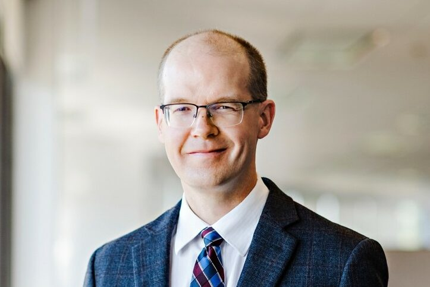
University of Waterloo
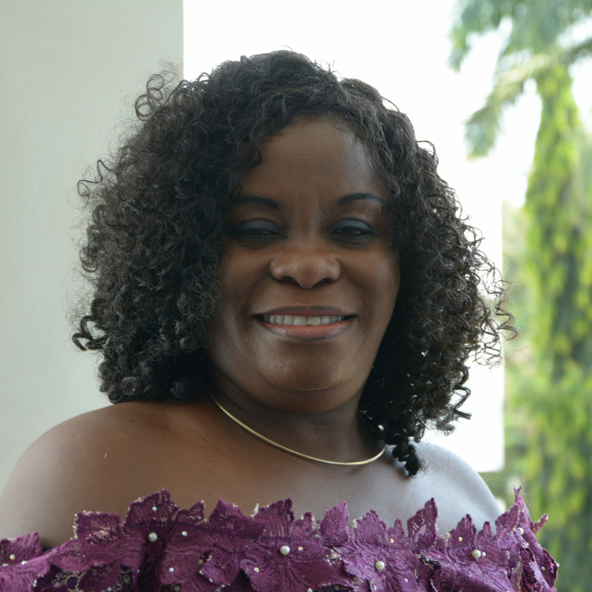
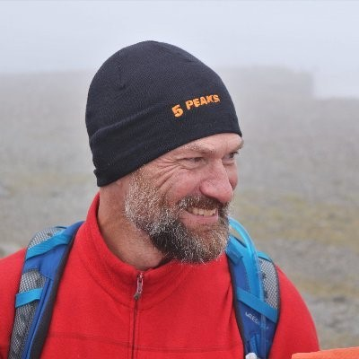

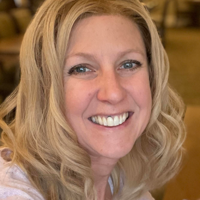
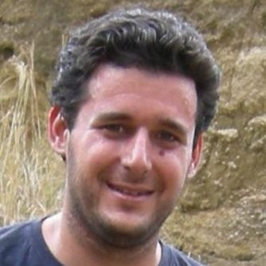
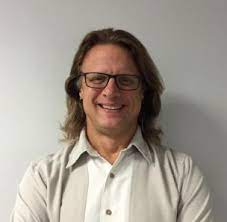
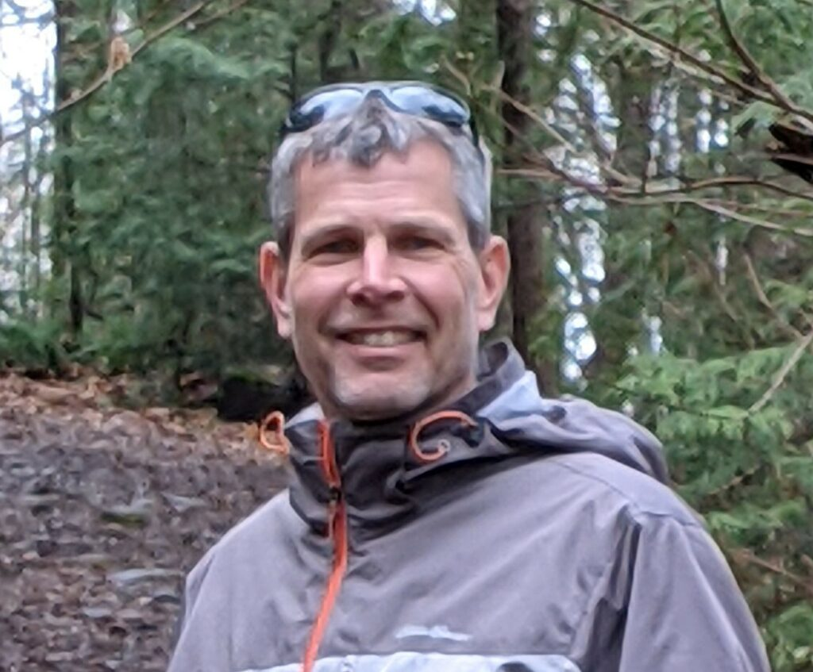
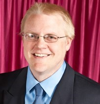


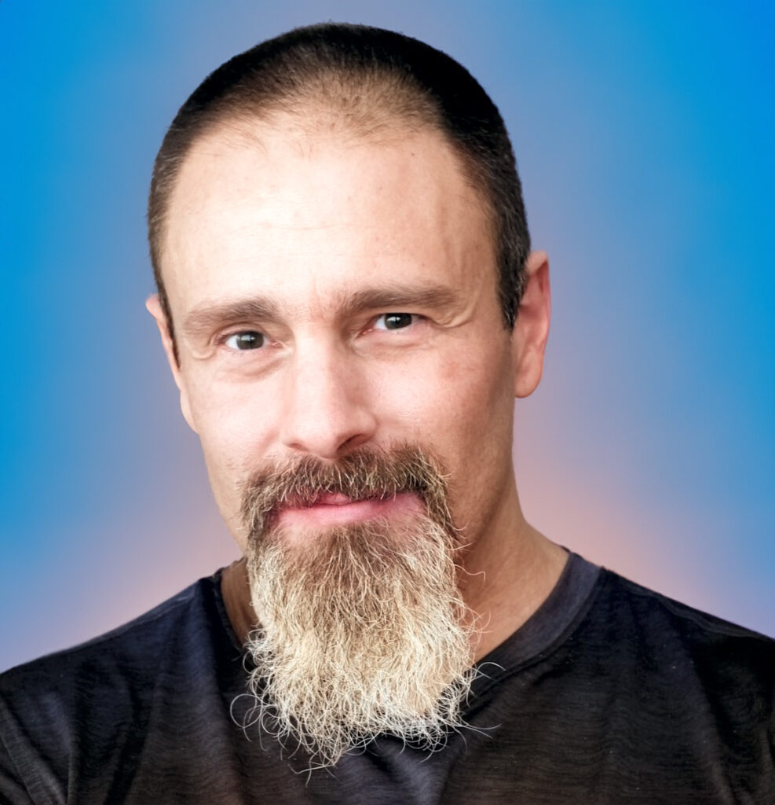

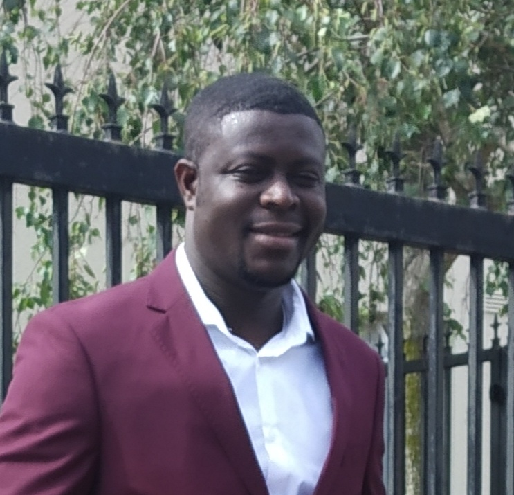
Helping Teachers Teach Mathematics Conference -HTTMC
Eligibility:
Applicants must be Mathematics and Computer Science teachers at the Primary, Junior or Senior high school level ie. Grades 1-12 who will be available to participate either online/ in-person within the stated period.
DEADLINE FOR APPLICATIONS: 22nd March 2024
Click HERE to apply.
For more information, kindly send an email to organizers at httmc@aims.edu.gh. The subject of your email should have your full name and the abbreviations of the conference: HTTMC as shown in the example: Kwesi.Ofori.HTTMC2024.
Event flyer available:
DownloadTravel Guide
Routine Vaccines:
Be sure that your routine vaccines, as per your province or territory, are up-to-date.
Some of these vaccines include: measles-mumps-rubella (MMR), diphtheria, tetanus, pertussis, polio, varicella (chickenpox), influenza and others.
Pre-travel vaccines and medications:
You may be at risk for preventable diseases while travelling to this destination. Talk to a travel health professional about which medications or vaccines are right for you.
Diseases include:
Hepatitis A
Yellow Fever – Country Entry Requirements
Rabies
Measles
Hepatitis B
Polio
Influenza
Meningococcal disease
Malaria
COVID-19
Food and Water-borne Diseases
Travel health and safety:
Emergency medical attention and serious illnesses require medical evacuation. Medical services usually require immediate cash payment.
Make sure you get travel insurance that includes coverage for medical evacuation and hospital stays.
Prescription drugs
If you take prescription medication, you are responsible for determining its legality in Ghana.
Precautions
- Bring sufficient quantities of your medication with you
- Always keep your medication in the original container
- Carry a copy of your prescription(s)
- Pack them in your carry-on luggage
COVID-19 Protocol at AIMS Ghana
AIMS Ghana adopts recommendations from National Covid 19 guidelines, so the main protocol is that anyone visiting Ghana or the Centre is required to be fully vaccinated. All participants should kindly adhere to this protocol.
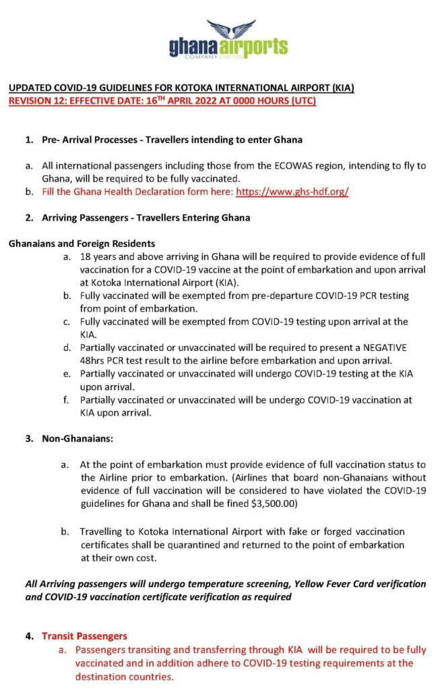
These are our participants comprising teachers from various regions in Ghana:
- Oppong Christiana, Baba Yara M/A 1&2 JHS, Greater Accra
- Adugbire Isaac, Azeem-Namoa Senior High School, Upper East
- Ayeebo Moses Apiiga, Ada Senior High, School Greater Accra
- Lepey Samuel, Manso Adubia Senior High School, Greater Accra
- Dogbe Ebenezer, Vakpo Senior High School, Volta
- Acquah Jonathan Bissah, Amenfiman Senior High School, Western
- Danquah Kwame Kyei, Ghana Secondary Technical School, Western
- Quainoo Vincent, Brafoyaw A.M.E Zion Basic ‘A’school, Central
- Anani Joycelyn, Ejisu Senior High Technical School Ashanti
- Amoah Ellen, Kwaprow M/A Basic, Central
- Amiah Akasa Kojo, Amenfiman Senior High School, Western
- Sulemana Mohammed-Muftaw, Zabzugu SHS, Northern
- Alhassan Hanifatu, Ghanata Senior High, Greater Accra
- Danso Dennis, Ayirebi SDA Basic School, Eastern
- Boamah Sandra, Accra College Of Education, Greater Accra
- Ackah George Ebanyenle, Enchico Demonstration JHS, Western North
- Hunkpe Anthony Kodzo, SDA SHS, Bono
- Agana Abiiro Paul, Fr. Lebel R/C Mem. JHS, Upper East
- Takyi Ofori-Atta, Weweso M/A JHS, Ashanti
- Nyarko Ebenezer, Abuakwa State College, Eastern
- Sottie Joseph Tetteh, Ada Senior High School, Ga Greater Accra
- Pwadam Raphael, Bolgatanga Senior High School, Upper East
- Yamoah Juliet, Wesley Girls’ High School, Central
- Ofori Tuffour Joyce, Apagya Senior High School, Ashanti
- Badu Mintah Richard, Mfantsiman Girls Senior High, Central
- Sumly Elizabeth, Ola Girls Senior High School, Ho
- Fuseini Amadu Fatawu, Wulugu Senior High School, Upper East
- Stephens Faustina Nana Ackon, Mfantsiman Girls Senior High School, Central
- Baalongbuoro Cletus, Business Senior High School, Tamale Northern
- Boakyewaah Alice, Winneba Secondary School, Central
- Anti Gifty Okyere, Regent University College Of Science And Technology, Greater Accra
- Fuseini Abukari, University of Education Winneba, Northern
- Quansah Yankson Isaac, Mfantsiman Girls Senior High School, Central
- Sampson Nana Ambrado, Mfantsiman Girls Senior High School, Central
- Ankudze Roland, Vakpo Senior High School, Volta
- Adzibolo Matilda, Achiase D/A JSS, ‘B’ Eastern
- Emmanuel Yenuturin, Tamale Girls SHS, Tamale
- Akorli Yaw George, Notre Dame Girls SHS, Bono
- Eghan Okyere Dora, The Morning Star School Limited, Greater Accra
- Nkrumah Fordjour Collins, Kwame Nkrumah University of Science and Technology Ashanti
- Kwaku Boakye, Adu Gyamfi SHS, Ashanti
- Konamah Bawuah Beatrice, SDA Senior High School, Sunyani, Bono
- Aberinga Gloria, Zuarungu Senior High School, Upper East
- Batongkuu Alhassan Abdul-Rahman, Kanton Senior High School, Upper West
- Siaw Richmond, Ghanata Senior High School, Greater Accra
- Owusu-Mintah Ruth, Akim Asafo Senior High School, Eastern
- Appiah Fosu Clement, Kwamekrom MA JHS, Western North
- Shahadu Abdul Fawas, Nakpanduri Business Senior High, North East
- Gah Patience, Ashaiman Technical Institute, Greater Accra
- Darko Theophilia, Notre Dame Girls SHS, Bono
- Amanor Jonas, Asuom Senior High School, Eastern
- Owusu Ansah Philomina, Golden Heart Academy, Ashanti
- Agboka Michelle, Accra Academy, Greater Accra
- Korantemaa Ahwireng Sylvia, Accra Academy, Greater Accra
- Kawuru Mathew Koapar, Nakpanduri Business Senior High School, North East
- Pyne Khin Aye Aye, American International School Accra, Greater Accra
- Egyir John, Prestea Senior High Technical School, Western
- Adjei Amorkor, Akwamuman Senior High School, Eastern
- Akakpo-Aba Pauline, Ghanata Senior High School, Greater Accra
- Osei Anita, Akwamuman Senior High School, Eastern
- Nyarko Gideon, Techiman Senior High School, Bono East
- Emmanuel Ahiabu, St. Catherine Senior High School, Volta
- Nkum Evans, Bia Senior High Technical School, Western North
- Baah Godfred, Oworam Ma JHS, Eastern
- Kasu Paul St. Cyprian Minor Seminary SHS, Savannah
- Vifa Precious, Eleme-Sovi M/A Basic School, Volta
- Arthur Francis Cosmos, Christian Home School, Greater Accra
- Acquah Frederick Sitsope, Nkwanta Senior High, Oti
- Nsengiyumva Emmanuel, G.S Burema, Nyarugenge
- Totimeh Raymond, Akwamuman SHS, Greater Accra
- Ackah Evelyn, Ame Zion Basic School, Greater Accra
- Dzakpasu Balie Edinam, Amrahia Adma JHS, Greater Accra
- Dassi Samuel, St Catherine Girls’ Senior High School, Volta
- Havor Godfred Kwasi, St. Margaret Mary Senior High/Technical School, Greater Accra
- Muragijemariya Chantal, Ep Ntyaba Northern Province/ Rulindo District
- Amissah Rufus Kwesi, Nsawkaw State Senior High School, Bono
- Gyabari Stephen Elvis, Ntruboman Senior High School, Oti
- Essel Patricia Egyimah Swedru Senior High School, Central
- Andoh Bright
- Gingaaru Mohammed Dinna, Kanton Senior High, Upper West
- Osei Lawrencia Asabea, Beacon International School, Greater Accra
- Elizabeth Ama Adzikah, Martey Tsuru Presby JHS, Greater Accra
- Tettey Benjamin, Accra College Of Education, Greater Accra
- Ofori Anim Samuel, Elias Addai Busunya Senior High School, Bono East
- Boateng Anna, Atomic Hills 1 Basic, Greater Accra
- Amoatey Benjamin, Wawase R/C JHS, Eastern
- Yeboah Isaac Boateng, Luom Presby Basic, Greater Accra
- Adjei Nicholas Kwame, Navs Senior High Technical School, Greater Accra
- Ashiboye Alexander, Edwinta Preparatory School, Greater Accra
- Ofori Albert, Odupong Senior High School, Central
- Victor Dogbe, Krobo Girls Presbyterian Senior High School, Eastern
- Nuamah Asiedu Ebenezer, Ghanata Senior High School, Greater Accra
- Atuahene Owusu-Sekyere Isaac Blessed, Ghana National College, Central
- Anku Adolph Goviefe, Kowu/Agodome Ep Basic School, Volta
- Amewuda Richard Tettey, Hwakpo D/A Basic School, Greater Accra
- Bright Mawunya Agbey, E.P Kg/ Pri School, Amedzofe, Volta
- Adjirakor Felix Ghanata SHS, Greater Accra
- Dzomeku Samuel, New Jerusalem School, Greater Accra
- Issah Bashiru Sakafia, Islamic Senior High School, Ashanti
- Kontoh Desmond, Oda Dt Anthony Cath JHS, Eastern
- Dassi Seth Kwame, St Catherine Girls’ Senior High School, Volta Region
- Baiden Magdalene, Swedru School Of Business, Central
- Mensah Abraham, Hiamankyene No.1 DA, Ashanti
- Adjenkwa Isaac Kwesi, Krobo Girls’ Presbyterian SHS, Eastern
- Agbenorhevi Raymond, St Paul’s Senior High School And Minor Seminary, Volta
- Precious Akplome, Ecole Ronsard Bilingual School, Accra Ghana
- Agyemang Opoku Peter, St. Mary’s Girls S.H.S, Ashanti
- Otoo Emmanuel, Yeji Senior High Technical School, Bono East
- Etefi Gideon, Swedru Senior High School, Central
- Aidoo Emmanuel Kwame, Ntruboman S.H.S, Oti
- Ansah Laing Emmanuel Jukwa Senior High Technical School, Central
- Gurcan Harun, Galaxy International School, Greater Accra
- Osei Prince, Santramor No.1 M/A School, Eastern
- Tetteh Johnson Ofoe Sekyedumase SHS, Ashanti
- Clad Keziah, Palma Christian School, Greater Accra
- Baah-Acheamfour Prince Senior, Odorgonno Senior High School, Greater Accra
- Gati Mawuli Fofone Kofi, Denu Chicago M. A. Basic School, Volta
- Diallo Boubacar, Bilingual School Of Bamako Bsb, Bamako
- Adonu Shadrack, Bowiri Senior High Technical School, Accra
- Arthur John Kingsford, Moree Junction Lslamic Basic School, Central
- Tamiur Desmond, Akwamuman Senior High School, Eastern
- Sam Solomon, The Victoria Grammar School, Greater Accra
- Boamah David Anyinamso D/A JHS, Ashanti
- Barima Asare Maxwell, Okomfo Anokye Senior High School, Ashanti
- Yekeku Frank, Bonsie Da Basic School, Western
- Osei Bernard, Fahiakobo D/A Basic, Ashanti
- Anim Emmanuel, Akorley M/A Basic School, Eastern
- Sevlo Eustace, Okuapeman Senior High School, Eastern
- Ablerh Paul, Galaxy International School, Greater Accra
- Agbasah Jonathan, Awutu Bawjiase Senior High School, Central
- Moses Avorkpo, Garrison Junior High School, Greater Accra
- Matey Wisdom Miaso, Krobo D/A JHS, Eastern
- Appiah Evans, Notre Dame Girls’ Senior High School, Bono
- Frimpong Emmanuel, Kokoteasua D/A JHS, Ashanti
- Attipoe Norkplim Kojo, Accra College of Education Demonstration School, Accra
- Ahedor Peter, St. Augustine Roman Catholic JHS, Accra
- Ahadzi Hlormah Moses, Konongo Odumasi SHS, Ashanti
- Kumi Yirenkyi Bernard, Faithkope D/A Basic School, Accra
- Opoku Israel, Dambai M/A JHS, Oti
- Oppong Jephthah, Hijaz Islamic Basic, Accra
- Kudiabor Benselasi Netenyaho, Agorhome Basic School, Volta
- Annor Isaac, Akotoe R/C KG, Prim and D/A JHS, Eastern
- Owusu Isaac, STEM SHS Abomosu, Eastern
- Fadil Abdallah, Sakafia Islamic Senior High School, Ashanti
- Aidoo Christopher Francis, All Souls Anglican ‘B’, Central
- Ansah Sidney Emissang, Wesley Girls Senior High School, Central
- Baiden Benjamin
- Poncho-Kotey Ephraim, University of Ghana, Legon, Accra
- Atabuatsi Kofi
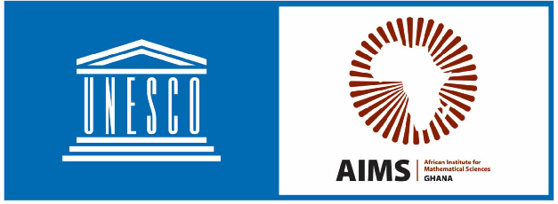
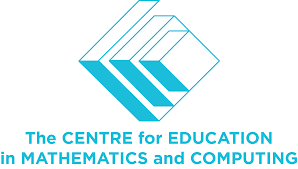